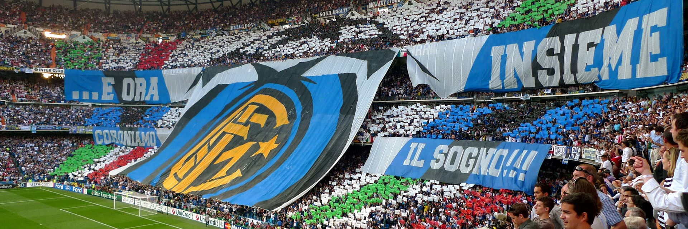

Inter Milaan in het huidige seizoen
Het huidige seizoen van Inter Milaan heeft alle kenmerken van een episch hoofdstuk in de rijke geschiedenis van de club. Met een mix van vastberadenheid, talent en tactisch vernuft streeft de ploeg naar succes in zowel nationale als internationale competities.
In de Serie A, de bakermat van Italiaans voetbal, heeft Inter Milaan vanaf het begin van het seizoen laten zien dat het vastbesloten is om zijn status als regerend kampioen te verdedigen. Onder leiding van hun charismatische coach, die een harmonieuze balans tussen ervaring en jeugdig enthousiasme heeft gevonden, is Inter betrokken geweest bij enkele zinderende duels die de harten van de fans sneller doen kloppen.
De club heeft opnieuw zijn onbetwiste sterspelers, wiens schitterende prestaties het veld verlichten. Met een stevige verdediging, creatieve middenvelders en doelgerichte aanvallers heeft Inter laten zien dat ze een geduchte tegenstander zijn voor elke tegenstander. De nauwkeurigheid van de passes, de kracht van de schoten en de vastberadenheid om te winnen zijn elementen die het spel van Inter kenmerken.

Internationaal gezien heeft Inter Milaan ook zijn stempel gedrukt in de UEFA Champions League. De strijd op het Europese toneel is intens en vereist niet alleen vaardigheid, maar ook mentale veerkracht. Inter heeft laten zien dat ze in staat zijn om te concurreren met de beste clubs van het continent, waarbij ze hun karakter tonen in opwindende wedstrijden die fans over de hele wereld aan het scherm gekluisterd houden.
Het huidige seizoen heeft ook enkele opmerkelijke individuele prestaties opgeleverd. Spelers van Inter hebben niet alleen hun stempel gedrukt op de teaminspanning, maar hebben ook persoonlijke mijlpalen bereikt en erkenning gekregen voor hun bijdragen aan het spel. Of het nu gaat om beslissende doelpunten, cruciale reddingen of creatieve assists, de spelers van Inter blijven schitteren op het voetbaltoneel.
De betrokkenheid van de fans is een cruciaal aspect van het huidige seizoen. Ondanks de uitdagingen waarmee de wereld te maken heeft, hebben de supporters van Inter Milaan hun team onvoorwaardelijk gesteund. De tribunes, hoewel mogelijk niet altijd vol, weergalmen nog steeds van passie en trots, en de virtuele gemeenschap van fans draagt bij aan de verbondenheid tussen de club en haar aanhangers.
Terwijl het seizoen zijn hoogtepunt nadert, blijft de toekomst voor Inter Milaan helder schijnen. Met ambitie, toewijding en de vastberadenheid om te excelleren, lijkt de club klaar om nieuwe hoofdstukken toe te voegen aan zijn glansrijke geschiedenis. Voor de fans van Inter en voetballiefhebbers overal ter wereld belooft het huidige seizoen een reis te worden vol opwinding, drama en, hopelijk voor Inter Milaan, triomfen.